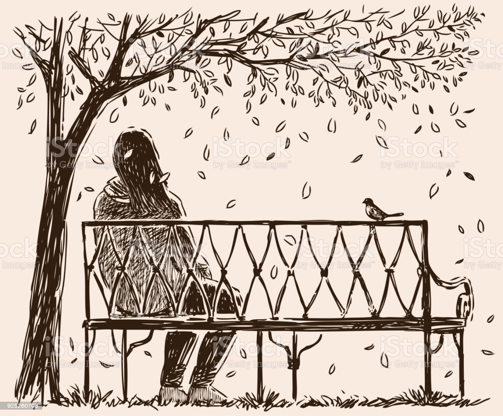
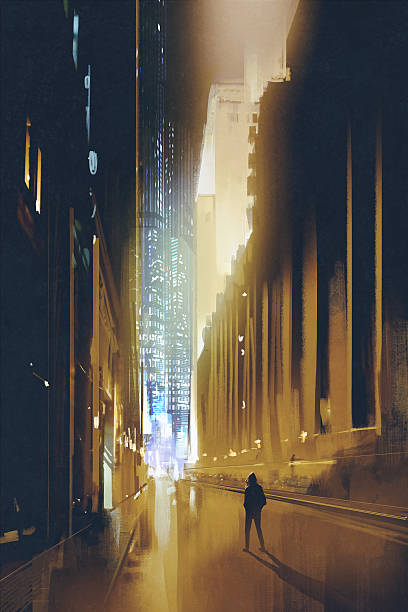

Snippet of short story "She sits alone"
October 2, 2021 by Bradley Henry

The night was cold. Not a spectacular or astonishing deduction, given the season.
The lingering regret of not carrying a thicker jacket for her night walk, dug deeper into her than the cold blade of a serial killer. She exhaled; hot breath escaped her lips. Much like she felt warmth and life leaving her very body. She wrapped her thick knitted scarf tighter around her neck, in a vain attempt to keep warmth. If she survived this moonlight walk, her grandmother was due a heart filled letter of praise.
She rubbed her hands together like sticks trying to catch a flame, before clasping them together. Closer to her face, she exhaled another hot breath, this time on to them. They didn’t thaw, but the stiffness lightened.
Mind over matter.
She thought of what awaited her. She thought of her destination and the cold melted under fear and anxiety. Winter pricked her body like a thousand needles, but her own mind collapsed from the sledgehammer of potential worry. Or perhaps overthinking would have been the best way to describe it?
Snippet of short story "Otherworldly"
September 21, 2021 by Bradley Henry

Rachel’s body tensed with at sound of something landing near her. Then. There were footsteps on the sand and slowly she turned her head in their direction. A young white male was walking towards her. He seemed to be in his twenties and dressed in a black business suit and polished black shoes. his right arm was missing and was replaced by an eerie black mist.
Alan Grant, her only friend in this war against the world. He was a demon that was just as much hated as she was. she made use of his True Name to bind him into a contract, so now he was her black knight.
Alan Grant stared at the human girl, his red eyes glowing. “Let’s get one thing straight girl,” he said coldly. “Combat is not my forte.”
He was right. Known as the ‘Demon of Words’, he used his talents to trick humans and non-humans alike.
“What was that?” Rachel softly asked. The movement of her mouth called attention to her busted lip and a cut on her cheek.
“Bogeyman,” Alan answered directing his attention to the sand as he began to draw something. “A type of demon that feeds off fear. Each one has its own taste. The one we just encountered feeds off the fear of nothingness. By locking away your senses, it forces your mind into distress. while it was your first time encountering it, I would prefer if in the future you don’t make our enemies stronger. It becomes quite the hassle.”
A creature that feeds on fear. Rachel shuddered.
Seeing her reaction, Alan Grant spoke once more. “Be happy they didn’t summon something worse.”